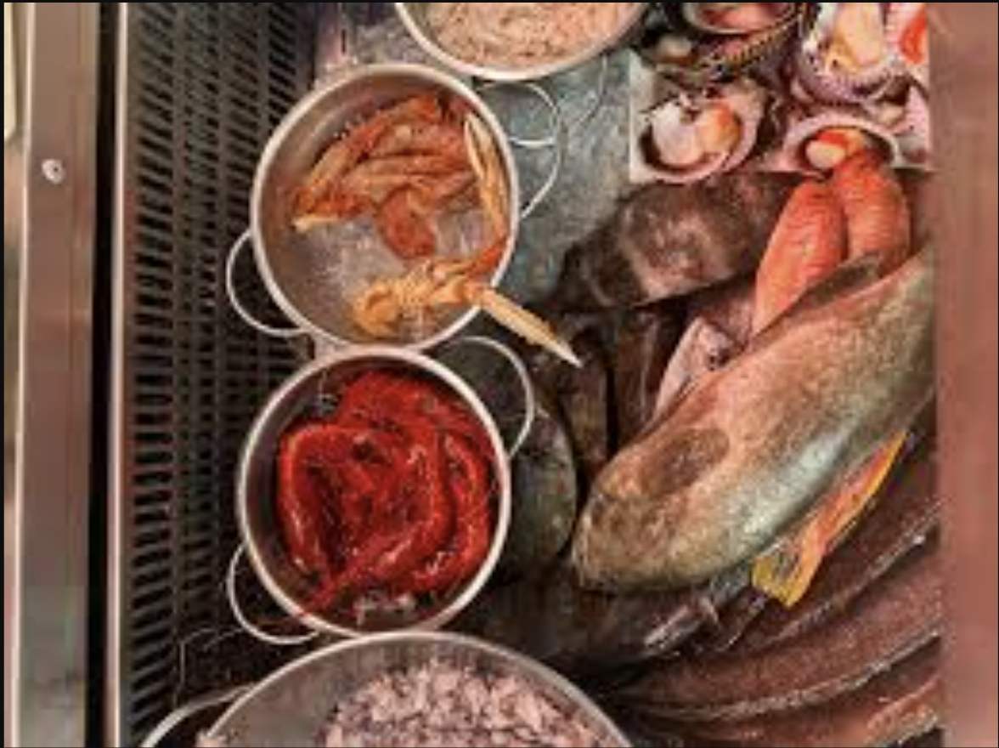
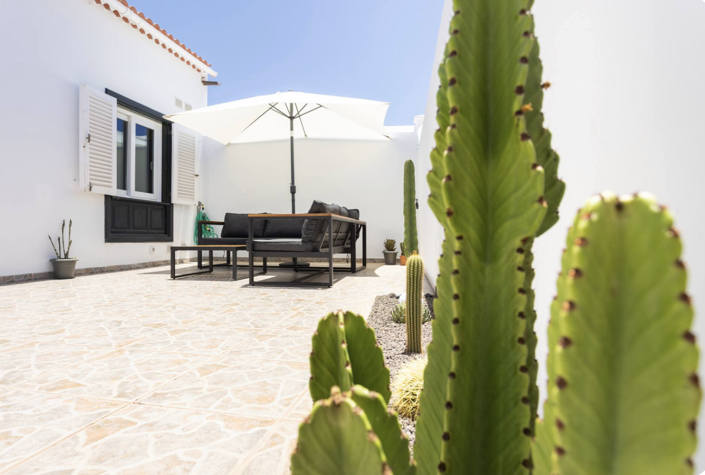
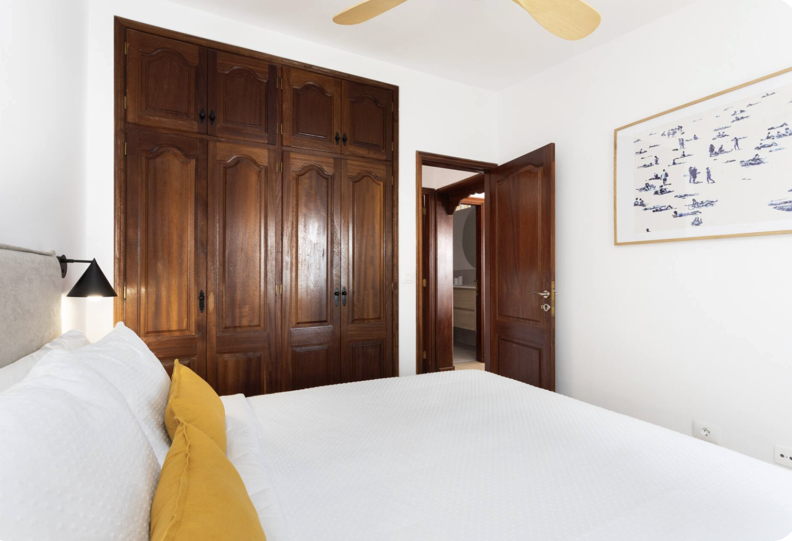
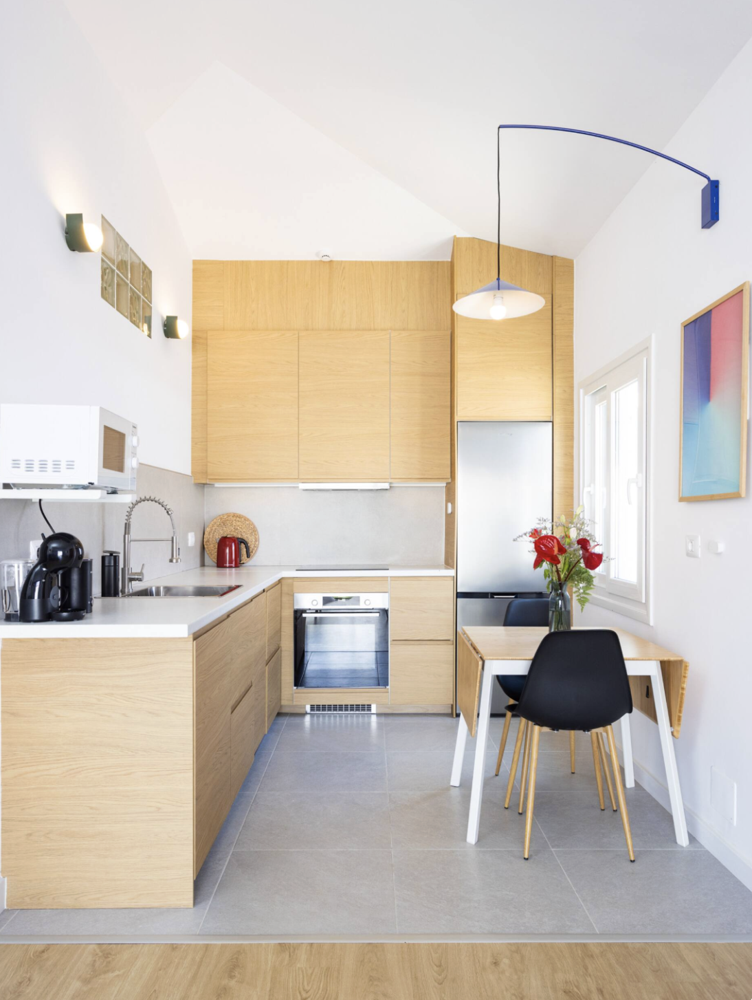

🏡
Comfortable Living
A bright space to relax after beach days and day trips.
Holiday home in Abades, Arico
Enjoy a relaxing holiday home in Abades, a quiet seaside village close to the beach, local restaurants, diving spots and some of Tenerife’s most beautiful coastal areas.
Welcome
Casa Abades Tenerife is designed for guests who want a comfortable and peaceful base in South Tenerife. Located in Abades, in the municipality of Arico, the home is ideal for beach days, island exploring, snorkelling, diving and quiet evenings near the sea.
Unlike busier resort areas, Abades offers a slower rhythm, local charm and easy access to beautiful coastal scenery.
The Holiday Home
Comfortable interiors, practical amenities and a quiet location for couples, families and island explorers.
A bright space to relax after beach days and day trips.
Prepare breakfast, snacks and simple meals at home.
Enjoy the peaceful coastal atmosphere of Abades.
Stay connected for planning, work or sharing your trip.

About Abades
Abades is a quiet coastal village on Tenerife’s south-east coast, known for its relaxed atmosphere, beach, local restaurants and easy access to the sea.
It is ideal for travellers who prefer authentic places, calm surroundings and a good base for exploring Tenerife.
Local Guide
Beaches, seafood restaurants, coastal walks, diving spots and scenic day trips are all within easy reach.
Relax by the sea, swim, sunbathe or enjoy a quiet coastal walk.

Visit nearby Tajao for fresh fish and local Canarian food.

The waters around Abades are popular for marine life and sea activities.

Explore El Médano, Montaña Roja, Teide National Park and Costa Adeje.
Photos
Discover the home, the surroundings and the calm coastal atmosphere of South Tenerife.



Book Your Stay
Check availability, prices, reviews and secure booking through Airbnb or Booking.com.
FAQ
It is located in Abades, Arico, on the south-east coast of Tenerife.
Yes, a rental car is recommended for exploring Tenerife comfortably.
Yes, Abades is suitable for families looking for a quiet coastal location.
You can book securely using the Airbnb or Booking.com buttons on this website.
Contact
For general questions about the home or the area, contact us directly.